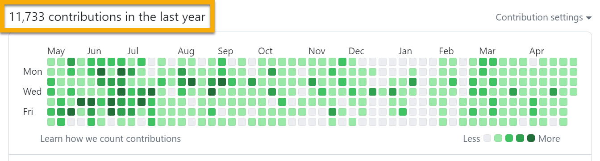

@karmaniverous/get-dotenv

Load, expand, and compose environment variables from a deterministic dotenv cascade, then execute commands under that context. Use get‑dotenv as a library, a CLI, or a plugin‑first host to build dotenv‑aware tooling with cross‑platform shell control, CI‑friendly capture, and clear diagnostics.
get-dotenv


get‑dotenv helps you:
- Load and merge env vars from a deterministic cascade (global/env × public/private) across multiple paths.
- Expand values recursively with defaults.
- Add dynamic variables (JS/TS) that compute from the composed env.
- Run commands with normalized shell behavior and a consistent child environment.
- Compose your own CLI from shipped plugins or your own.
See full guides:
- Getting started
- Config and overlays (dynamic, validation, defaults):
- Dotenv editor (format-preserving)
- Shell execution behavior, quoting, capture
- Shipped plugins
- Authoring plugins (host, lifecycle, exec, diagnostics)
Use Cases
- Execute deployment steps across many repositories from one command sequence. See batch plugin guide
- Run config‑driven, environment‑aware operations with simple CLI commands. See config guide
- Compose a rich CLI from shipped and third‑party plugins and share it across projects. See shipped plugins overview
- Drive complex AWS workflows in an authenticated, environment‑aware context. See aws plugin guide
- Scaffold a project config and a host‑based CLI skeleton in seconds. See init plugin guide
- Batch lint/build/test across a monorepo with deterministic output. See batch plugin guide
- Run cross‑platform commands in CI with normalized shells and capture. See shell guide
- Programmatically compose env and run tools inside Node scripts. See Getting started
- Add observability without leaking secrets using trace, redaction, and entropy warnings. See diagnostics guide
- Author new plugins with maximum DX and minimal boilerplate. See authoring plugins guide
Requirements
- Node.js ≥ 20 (this repository pins 22.19.0 for CI/reproducibility)
Installation
npm install @karmaniverous/get-dotenv
Quick Start
Run a one‑off command with your env (parent alias so flags apply to getdotenv):
npx @karmaniverous/get-dotenv -c 'node -e "console.log(process.env.APP_SETTING ?? \"\")"'
Load programmatically:
import { getDotenv } from '@karmaniverous/get-dotenv';
const vars = await getDotenv({ env: 'dev', paths: ['./'] });
console.log(vars.APP_SETTING);
Embed a CLI quickly (shipped plugins wired for you):
#!/usr/bin/env node
import { createCli } from '@karmaniverous/get-dotenv/cli';
await createCli({ alias: 'toolbox' })();
More first steps and tips at Getting Started
Configuration & overlays
Author config in JSON/YAML/JS/TS at your project root. The loader is always on in the shipped host:
- Data:
vars(global),envVars(per‑env) - Root defaults and visibility for CLI flags:
rootOptionDefaults,rootOptionVisibility - Optional scripts table:
scripts - Dynamic (JS/TS only):
dynamic - Validation (JS/TS schema or required keys):
schema,requiredKeys
Overlays apply by kind/env/privacy/source with clear precedence. Details and examples in the Config guide.
Dynamic variables (JS/TS)
Add dynamic keys that compute from the composed env. Programmatic or file‑based (JS/TS). For TypeScript, install esbuild for auto‑compile.
// dynamic.ts
export default {
GREETING: ({ APP_SETTING = '' }) => `Hello ${APP_SETTING}`,
};
Learn more in the Config guide formats section.
CLI basics
The shipped CLI is plugin‑first:
- Execute commands within your dotenv context using the
cmdsubcommand or the parent alias:getdotenv cmd ...orgetdotenv -c 'echo $APP_SETTING'- Quoting, alias conflicts, expansion behavior. More info...
- Normalize shell behavior across platforms; use
--shell(default OS shell) or--shell-off, and enable capture for CI: - Execute across multiple working directories with the [
batchplugin]guides/shipped/batch.md
Diagnostics (trace, capture, redact, entropy)
--trace [keys...]prints per‑key origin (dotenv | parent | unset) before spawning.- Deterministic output for CI: set
GETDOTENV_STDIO=pipeor pass--capture. - Presentation‑time redaction for secret‑like keys:
--redact/--redact-off(+--redact-patternfor additional key matches). - Optional entropy warnings (length/printable/threshold gated) for likely secrets in logs/trace.
Learn more:
- Shell & capture
- Authoring diagnostics (redaction & entropy)
Shipped plugins
- cmd — execute a command (with parent alias)
- batch — run a command across multiple working directories
- aws — establish a session and optionally forward to AWS CLI
- init — scaffold config files and a host‑based CLI skeleton
Also see the shipped plugins overview.
Authoring your own CLI & plugins
The host resolves dotenv context once per invocation, overlays config, validates, and then runs plugins with a typed options bag.
- Lifecycle & wiring
- Executing shell commands from plugins
- Config & validation for plugins
API Reference
Typed API docs are built with TypeDoc.
Changelog
See CHANGELOG.md
License
BSD‑3‑Clause — see LICENSE
Built for you with ❤️ on Bali! Find more great tools & templates on my GitHub Profile.